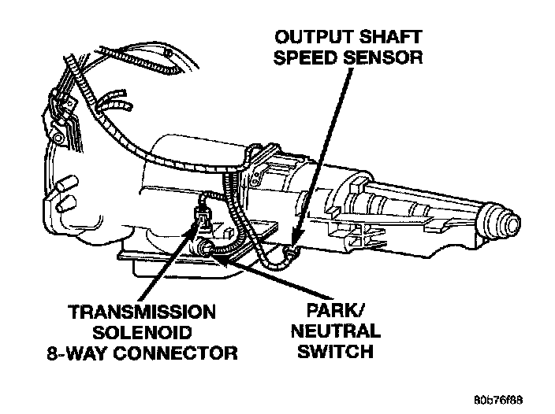
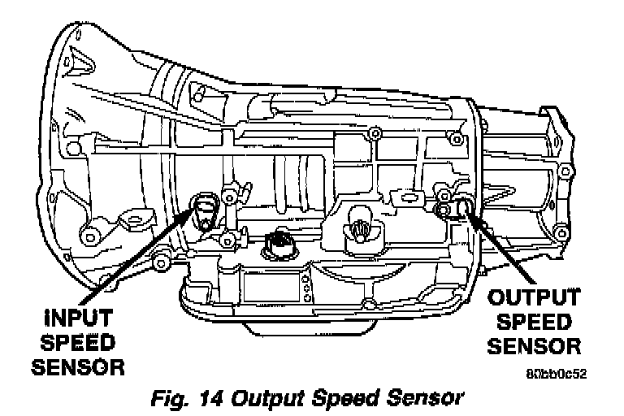

Transmission Speed Sensor: Service and Repair
Output Shaft Speed Sensor, Park/Neutral Switch, Transmission Solenoid 8-way Connector:

42RE, 42RH, 44RE, 46RH
Fig. 14:

45RFE
NOTE: On vehicles equipped with the 45RFE transmission, the procedures for the Input Shaft Sensor are identical.
1. Raise vehicle.
2. Place a suitable fluid catch pan under the transmission.
3. Remove the wiring connector from the output speed sensor.
4. On the 45RFE transmission, remove the bolt holding the output speed sensor to the transmission case.
5. Remove the output speed sensor from the transmission case.
6. Installation is reverse of removal, noting the following:
For the 42RE, tighten the speed sensor to the transmission case to 20 ft. lb.
For the 45RFE, tighten the speed sensor holding bolt to 105 in. lb.